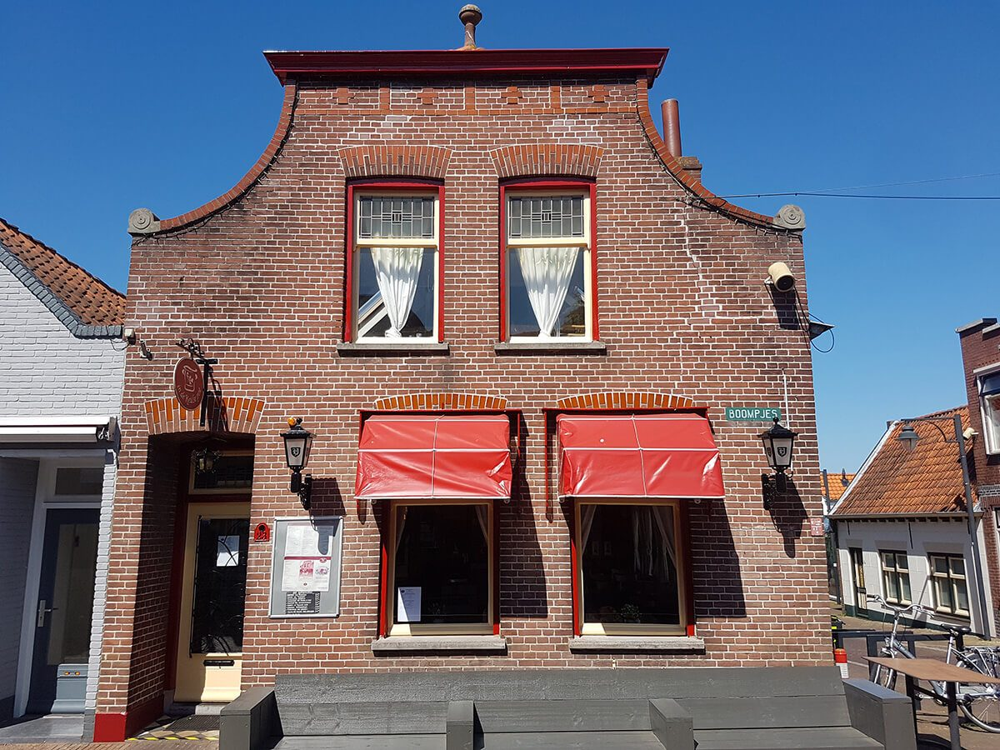
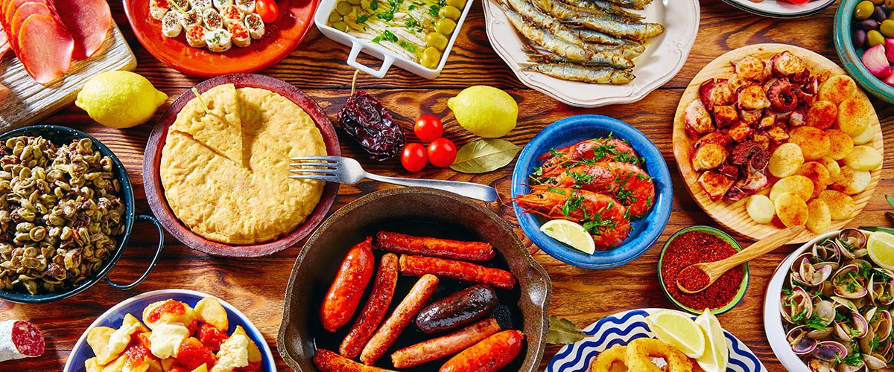
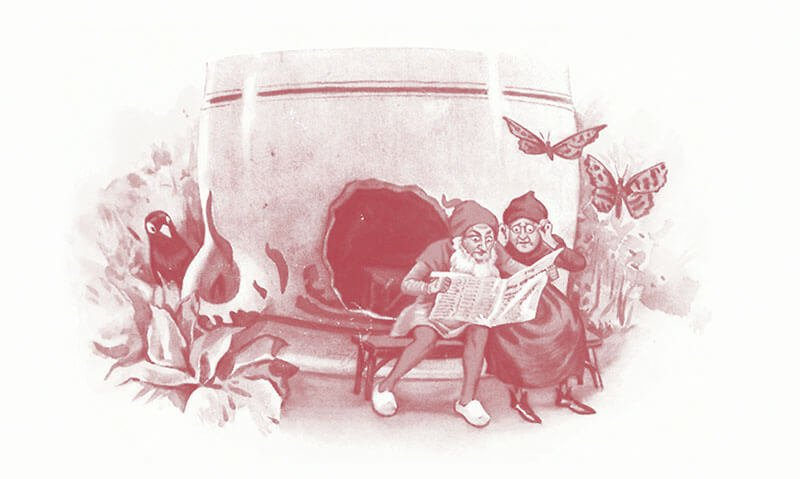

Voel je thuis in het centrum van Ouddorp
Lunch, diner, tapas of koffie met verse appeltaart. Vertrouwde smaken met een goede prijs/kwaliteitverhouding, in een prettige, ongedwongen sfeer.
Lunch, diner of koffie
Vers en met smaak bereid. Een greep uit de kaart:
Lunch
Te bestellen tot 17.00 uur
- Keulse Rol vis€ 11,25
- Gebakken geitenkaas€ 9,90
- Uitsmijter ham/spek/kaas€ 8,50
Diner
Hoofdgerechten wisselen, kijk op het krijtbord
- Catalaanse vissoep€ 6,50
- Carpaccio salade€ 16,00
- Kinderpannenkoek€ 6,50
Koffie & borrel
Open vanaf 10.00 uur, zondag vanaf 12.00 uur
- Huisgemaakte appeltaart€ 4,25
- Hertog Jan van de tap€ 3,00
- Bittergarnituur, 10 stuks€ 8,00

Het 'Keulse pot' tapasdiner
Waan je in Spaanse sferen. Samen delen van een tafel vol koude en warme gerechtjes, met salade en brood.
Vanaf 2 personen. Tapas los bestellen bij de borrel kan ook.
ReserverenSpeciale (di)eetwensen? Laat het ons weten, we helpen je graag.
Een huiselijke eetgelegenheid
In de Keulse Pot zit midden in het centrum van Ouddorp, aan de Boompjes. Kom binnen voor een lunch of diner, koffie met verse appeltaart, of een vers getapt biertje met borrelgarnituur.
Vertrouwde smaken met een goede prijs/kwaliteitverhouding, in een prettige, ongedwongen sfeer.

"Want ze hadden heel geen huisje, in een oude Keulse pot." Onze naam komt uit het versje van Piggelmee: het dwergenpaartje dat na al hun reizen vond dat thuis de koffie het beste smaakt.
Haal de Keulse Pot in huis
Geen zin om te koken? Wij maken het klaar, jij haalt het op. Of laat ons de catering verzorgen.
Afhaalmenu van week 45
Elke week een nieuw afhaalmenu. Een greep uit deze week:
Diner afhalen: 17.00 - 20.00 uur
- Thaise curry met kip€ 12,50
- Keulse kapsalon€ 12,50
- Huisgemaakte spareribs€ 19,50
- Gebakken schol€ 17,00
- Gamba's Portugese wijze€ 16,50
- Tapasdiner warm€ 16,00 p.p.
Lunch afhalen: 12.00 - 17.00 uur
Catering
Een feestje, familiereünie of andere bijeenkomst? Wij verzorgen het eten, vanaf 20 personen.
- Soepen, salades, tapas en warme buffetten
- Warme maaltijden vanaf € 9,50 p.p.
- Bezorgd vanaf € 150, binnen 10 km rond Ouddorp gratis
Een tafel reserveren
Stuur ons een bericht of bel, dan reserveren we een tafel voor je. Voor vandaag of binnen 24 uur? Bel even of we nog plaats hebben.